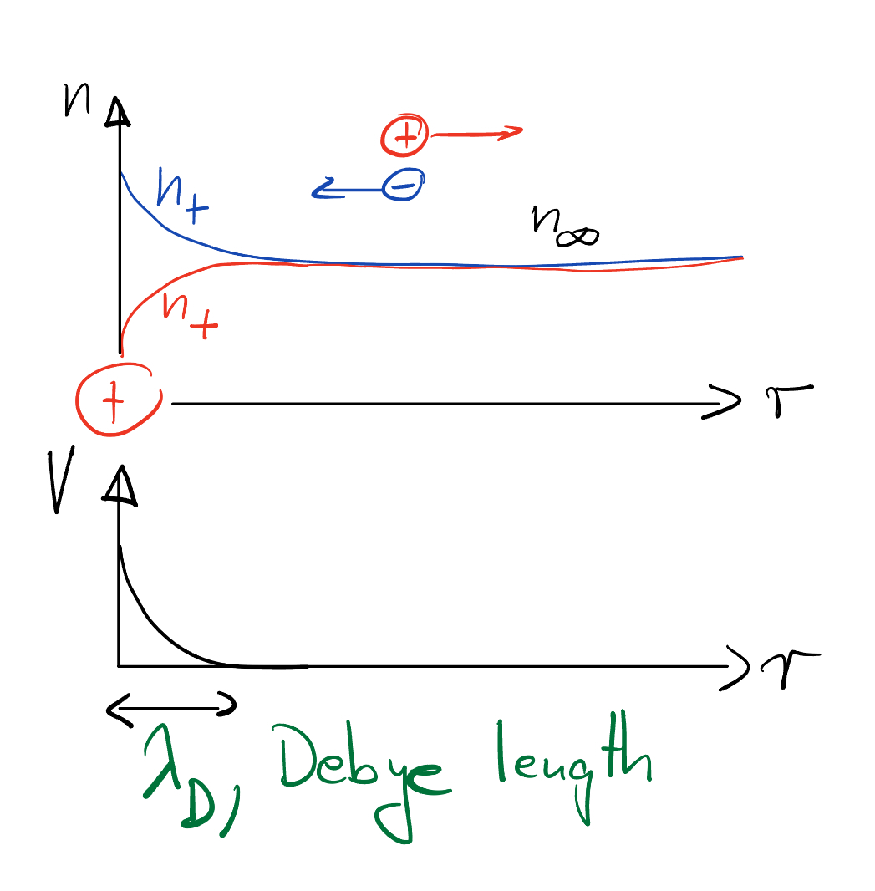

Debye-Hückel theory - charge screening#
When we discussed our variational approach and mean field theory, the question came up what happens when the two-body potential energy decays slowly, like the eletrostatic potential \(U= e^2/(4\pi r)\)? Then,
Thus, the interactions are too strong to apply our previous mean field /variational approaches, which assumed we can approximate the true gas by a modified version of the ideal gas.
Fortunately, there’s another mean-field theory: Debye-Hückel.
But first, a quick …
Recap electrostatics#
Gauß’s law for electricity in differential form
where \(\rho(\vec r)\) is the charge density and \(D\) is the dielectric constant of the medium, assumed to be constant (\(D\approx 80\) in water!).
In the absence of a magnetic field, the curl of the electric field vanishes. So, we can write \(\mathbf{E}\) as the gradient of an electrical potential \(V\),
Gauß’s law thus turns into the Poisson equation
For discrete charges \(q_i\),
We can express the total electrostatic interaction energy as
Debye screening#
Suppose there are two types of ions, \(q_{\pm}=\pm z e\), where \(z\) is the charge number and “+” refers to a cation and “-” to anion. Let’s describe the average ion density by \(n_{\pm}=\langle \rho_{\pm}\rangle/q_{\pm}\), which we suppose is equal to \(n_\infty\) for both ion types far from any perturbation. For example, inside cells there are lots of sodium (Na+), potassium (K+), and chloride (Cl-) at around \(n_\infty\sim 100 mM\) each. What happens if we introduce an extra charge and keep it fixed at the origin?
Intuitively:

How to describe the average density \(\rho(x)\) of charges and the average electric potential?
What’s the shape of the charge distribution?
Ignoring fluctuations, we can say:
The Boltzmann distribution dictates the density given the electrostatic potential
But the electric potential \(V(r)\) depends on the density via the Poisson equation (in 1D):
where we introduced an externally fixed charge density \(\rho_{ext}(r)\).
(19) and (20) have to be solved self-consistently, which is hard in general.
But when \(q V \ll K T\) (ie. assume \(x \gg l_{\beta}\) ), we can expand: \(n_{ \pm}=n_{\infty}\left(1 \mp \frac{z e V(r)}{k T}\right)\)
In Fourier space, this equation reads
So, the electrical potential of a point charge \(\rho_{ext}(q)=1\) decays exponentially,
on a length scale called the Debye screening length,
The potential in (21)is called “Yukawa potential”.
Note
Where did the above analysis make a mean field approximation?
We light-heartedly assumed that the probability \(p({\rho})\propto e^{-\beta U[\rho]}\) of a charge distribution \(\rho(r)\) with the interaction energy \(U\) given by (18), can be written as
as if the density interacts with the average electrical potential. But, in fact, \(V\) is fluctuating itself as it depends on \(\rho\).
Starting form the correct interaction energy, we can see clearly what approximation we’ve done:
where “const.” refers to a term that is the same for every charge micro-state.
We clearly ignored the term of order \(\delta rho \delta V\), which is acceptable if the relative mean squared deviation of both quantities are small.
Secondly, we replaced
This, in fact, is not an approximation but a straight forward consequence from the Poisson equation,
Thus, ignoring \(O(\delta \rho \delta V)\) terms in the interaction energy is “all” we did.
Note
Significance of Debye screening for protein binding:
Inside biological cells, \(\lambda_D\approx 0.8\) nm due to ion concentrations in the 100mM range. Since proteins have typical diameter of \(4\) nm, electrostatic protein-protein interactions usually play out on their surfaces:

Binding requires complementary surface shapes and charge distributions.
Even if complimentary charges get close, interaction potentials barely exceeds \(k_BT\) (technically, because thermal fluctuations let charges fluctuate on a scale comparable to \(\lambda_D\)) \(\Rightarrow\) need several electrostatic bonds.
together, this implies that binding is highly specific
Bulk structure and bulk charge distribution are less critical to binding.
caveat: The last decade has revealed that weak binding due to unspecific binding between intrinsically disordered proteins can generate protein condensates that form membrane-less droplet-like organelles -> hot/hyped field.
rem: our assumption \(q V \gg k_{B} T\) works well for proteins